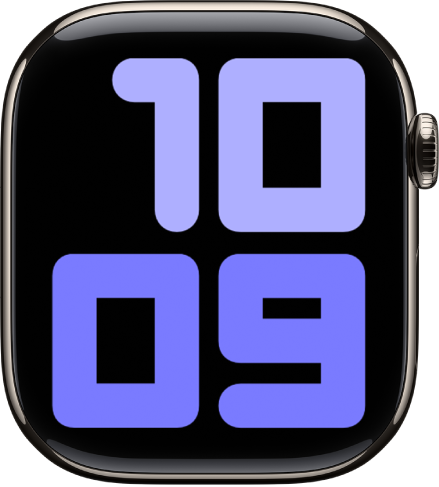

此表盘以 Apple 设计专用于 Apple Watch 的字体显示较大数字。
下方的文件数包括本地化资源。固件名称键能确认包的归属；组件的圆屏点击边界、亮屏过渡与 AOD 对照均待设备验证。
NTKBigNumeralsDigitalFaceBundle.bundleFACE_STYLE_BIG_NUMERALS_DIGITAL_DESCRIPTION色组与设备条件 BigNumeralsDigital.color.plist 共享色组与默认值
+[NTKBigNumeralsDigitalFace tritium_burnInFaceName];-[NTKBigNumeralsDigitalFaceView tritium_createFaceAnimator];-[NTKBigNumeralsDigitalTimeView tritium_didTransitionToTritiumOff];-[NTKBigNumeralsDigitalTimeView tritium_transitionToTritiumOnWithProgress:];-[NTKBigNumeralsDigitalTimeView applyTritiumOnTransitionProgress:];-[NTKBigNumeralsDigitalTimeView tritium_transitionToFrameSpecifier:];-[NTKBigNumeralsDigitalTimeView tritium_transitionToTritiumOffWithProgress:];-[NTKBigNumeralsDigitalTimeView tritium_willTransitionToTritiumOnToFrameSpecifier:];-[NTKBigNumeralsDigitalColorPalette minuteDigits];-[NTKBigNumeralsDigitalColorPalette _minuteDigits];-[NTKBigNumeralsDigitalFaceView _applyTransitionFraction:fromOption:toOption:forCustomEditMode:slot:];-[NTKBigNumeralsDigitalFaceView tritium_createFaceAnimator];-[NTKBigNumeralsDigitalFaceView _cleanupAfterTransitionToOption:forCustomEditMode:slot:];-[NTKBigNumeralsDigitalTimeView cleanupTransition];-[NTKBigNumeralsDigitalTimeView applyTransitionFraction:fromTypeface:toTypeface:];-[NTKBigNumeralsDigitalTimeView tritium_didTransitionToTritiumOff];-[NTKBigNumeralsDigitalTimeView tritium_transitionToTritiumOnWithProgress:];-[NTKBigNumeralsDigitalTimeView applyTransitionFraction:fromStyle:toStyle:];-[NTKBigNumeralsDigitalTimeView applyTritiumOnTransitionProgress:];-[NTKBigNumeralsDigitalTimeView tritium_transitionToFrameSpecifier:];-[NTKBigNumeralsDigitalTimeView applyRainbowColorTransitionWithFraction:colorPalette:];-[NTKBigNumeralsDigitalTimeView tritium_transitionToTritiumOffWithProgress:];-[NTKBigNumeralsDigitalTimeView setOverrideDate:duration:];-[NTKBigNumeralsDigitalTimeView tritium_willTransitionToTritiumOnToFrameSpecifier:];-[NTKBigNumeralsDigitalColorPalette hourDigits];-[NTKBigNumeralsDigitalColorPalette minuteDigits];+[NTKBigNumeralsDigitalColorEditOption __orderedValuesForDevice:];+[NTKBigNumeralsDigitalColorEditOption _snapshotKeyForValue:forDevice:];+[NTKBigNumeralsDigitalColorEditOption domain];+[NTKBigNumeralsDigitalColorEditOption optionWithColor:forDevice:];+[NTKBigNumeralsDigitalColorEditOption _orderedValuesForDevice:];-[NTKBigNumeralsDigitalColorEditOption pigmentEditOption];-[NTKBigNumeralsDigitalColorEditOption _valueToFaceBundleStringDict];-[NTKBigNumeralsDigitalColorEditOption isPrideOption];-[NTKBigNumeralsDigitalColorEditOption color];+[NTKBigNumeralsDigitalColorPalette multicolorAxialGradientLayerForColor:device:];-[NTKBigNumeralsDigitalColorPalette _hourDigits];-[NTKBigNumeralsDigitalColorPalette _minuteDigits];-[NTKBigNumeralsDigitalFace _numberOfOptionsForCustomEditMode:slot:];-[NTKBigNumeralsDigitalFace _defaultOptionForCustomEditMode:slot:];-[NTKBigNumeralsDigitalFace _indexOfOption:forCustomEditMode:slot:];-[NTKBigNumeralsDigitalFace _optionAtIndex:forCustomEditMode:slot:];+[NTKBigNumeralsDigitalFaceBundle _bigNumeralsDigitalFacesWithColorOptions:forDevice:];+[NTKBigNumeralsDigitalFaceBundle _editOptionsWithColorValues:device:];-[NTKBigNumeralsDigitalFaceView createFaceColorPalette];-[NTKBigNumeralsDigitalFaceView _applyTransitionFraction:fromOption:toOption:forCustomEditMode:slot:];-[NTKBigNumeralsDigitalFaceView layoutSubviews];-[NTKBigNumeralsDigitalFaceView _applyBreathingFraction:forCustomEditMode:slot:];-[NTKBigNumeralsDigitalFaceView _cleanupAfterTransitionToOption:forCustomEditMode:slot:];-[NTKBigNumeralsDigitalFaceView _applyOption:forCustomEditMode:slot:];-[NTKBigNumeralsDigitalFaceView _applyRubberBandingFraction:forCustomEditMode:slot:];-[NTKBigNumeralsDigitalTimeView layoutSubviews];-[NTKBigNumeralsDigitalTimeView applyColorPalette:];-[NTKBigNumeralsDigitalTimeView applyRainbowColorTransitionWithFraction:colorPalette:];